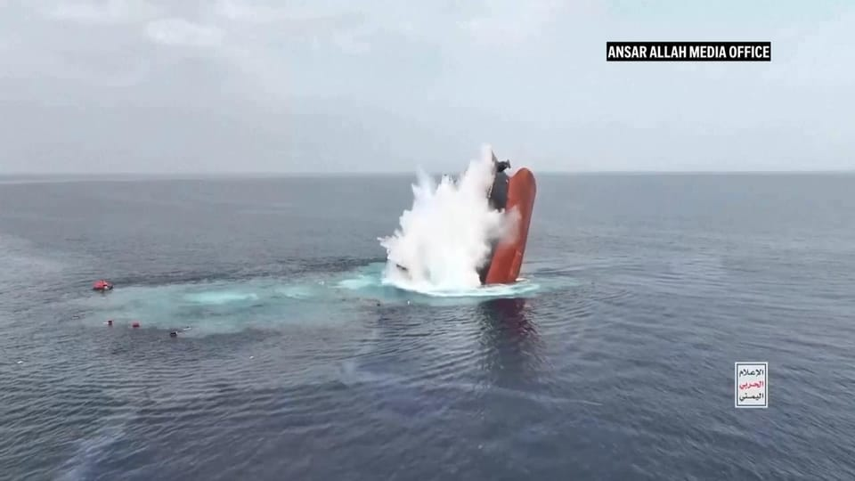

世界苦茶07月11日新闻 | 48条 | 特朗普巴西加拿大贸易战开打

特朗普巴西加拿大贸易战开打 | 特朗普首次动用总统权限军援乌克兰 | 欧盟开始调查TikTok | 郑州人民公园群殴性少数者被捕 | 考公人数首次超过高考人数 | 网红Mr. Beast确定中国行程
今日三条新闻分析
苦茶数据
美元兑人民币：7.17（昨日7.17，前日7.18）
美元兑日元：147.10（昨日146.06，前日146.99）
上证指数：3546（昨日3501，前日3502）
标普500指数：6280（昨日6263，前日6225）
比特币：116511（昨日111228，前日108794）
布伦特原油：68.79（昨日70.16，前日69.91）
中国新闻
• 网红野兽先生将赴华拍摄 ：被称为“全球第一网红”的美国知名网红“野兽先生”，将赴中国拍摄节目。据《中国新闻周刊》官方微信公众号报道，野兽先生最早将于今年第四季度到中国拍摄大型挑战节目。报道引述“歪果仁研究协会”的博主高佑思说，该协会在几年前就与野兽先生接触。“我们一直希望能通过他让世界看到中国。他的团队决定在今年开启中国区发展计划。”
• 黄仁勋将访华 英伟达拟在中国推出新AI芯片： 英伟达公司计划最早于九月推出一款专为中国市场设计的新人工智能芯片，首席执行官黄仁勋还计划访问中国。这款芯片是英伟达现有的 Blackwell RTX Pro 6000 处理器的一个版本，经过修改以符合美国总统特朗普收紧的出口管制规定。该产品将被剥离最先进的技术，例如 HBM和NVLink。据知情人士透露，黄仁勋计划在参加下周三于北京开幕的中国国际供应链促进博览会期间，与中国高层领导人会面。英伟达CEO正在寻求与中国国务院总理李强举行会谈。如果顺利，李强将是他迄今为止会晤的级别最高的中国官员。他还计划与副总理何立峰会面。黄仁勋的行程尚未最终确定，仍需中方批准。
• 香港政府7月11日公布《同性伴侣关系登记条例》草案全文，立法会将于7月16日一读： 相比框架文件，登记条件不变（需在海外已结合），但离婚条件放宽：如海外伴侣关系终结，则香港伴侣关系即失效，当事人需在6个月内书面告知港府；此外，若双方一致同意解除伴侣关系，也可直接向港府提出申请，无需先解除海外伴侣关系。条例明确，在海外登记的民事伴侣关系，无论是亲身出席还是远距登记都属有效。
• 王毅表示，中是亚细安稳定力量 ：中国外长王毅在中国—亚细安外长会上说，中国始终是动荡世界中最可信赖的稳定力量，是亚细安国家应对挑战最可依靠的合作伙伴，并称中国赞赏亚细安坚定维护自由贸易和多边贸易体制。据中国外交部官网消息，中国—亚细安外长会在马来西亚吉隆坡举行，王毅同中国亚细安关系协调国代表共同主持，亚细安各国外长等人与会。王毅说，中国与亚细安发展理念相近、诉求相通、利益相融，视亚细安为周边外交优先方向、推动构建人类命运共同体的先行区。
• 王毅吁日坚守和平道路 ：中国外交部长王毅在亚细安外长会议期间与日本外长岩屋毅会面时，呼吁日本汲取历史教训，坚守和平发展道路。据中国外交部官网消息，中共政治局委员、中国外交部长王毅星期四在吉隆坡与日本外相岩屋毅会面。王毅说，今年是中国人民抗日战争暨世界反法西斯战争胜利80周年，是正视历史、开辟未来的重要契机。
• 考编人数首超高考 ：就业形势严峻，越来越多中国人选择报考事业单位，河北省秦皇岛市今年考编人数超过了高考。秦皇岛市人力资源和社会保障局官网数据显示，2025年该市事业单位招聘报名人数达到创纪录的4万7649人，其中完成缴费确认3万5019人，较去年激增9691人，增幅高达38.26%。这一数字也超过了当地高考报名人数。据秦皇岛新闻网报道，2025年该市共有2万5515名考生报名参加高考，较去年减少2357人。
• 联合国关注甘肃铅中毒事件 ：联合国儿童基金会对甘肃天水幼儿园幼童铅中毒事件表示关切，称即使少量的铅暴露也可能影响儿童的身心健康。甘肃省天水市褐石培心幼儿园近日卷入铅中毒风波，幼童因吃下含有不可食用彩绘颜料的食物，251人中有233人查出血铅异常。部分幼童出现腹痛、腿痛、食欲不振和呕吐等情况，去医院检查后确诊铅中毒。幼儿园园长、投资人、后厨等八人已被刑事拘留。
• 日企指中国馆拖欠工程款 ：时隔一个月，再有日本分包商指大阪世博会中国馆拖欠建设费，金额达6000万日元。据日本共同社报道，参与世博会中国馆建设的日本奈良市一家电气工程公司星期三在大阪府政府大楼举行记者会，称6000万日元的工程费尚未支付。该公司称，去年11月至今年3月实施的监控摄像头管线设置等追加施工费用，至今尚未支付。公司指出，日本国际博览会协会应当尽快确认此问题，并强调“施工没有问题且赶上了工期，不支付工程费令人气愤”。
• 郑州针对性少数聚众施暴被捕 ：中国郑州市人民公园附近发生聚众殴打他人事件，共有17人被警方逮捕，其中五人为未成年。涉案人员据报通过网络建立联系，多次临时起意，相约实施暴力行为。综合澎湃新闻和《三湘都市报》等报道，郑州市人民公园附近近期接连发生多起聚众殴打事件。网传视频显示，多名青年男子在夜间持械围追殴打他人。据悉，施暴者通过交友软件伪装成同性恋者，利用伪造照片、变声器、特定话术和虚假生活场景获取信任，再将受害者约至公园实施围殴。他们使用棍棒、甩棍、喷雾等工具对受害者暴力攻击，并拍摄视频上传网络。
• 中使馆警告在韩注意反华活动 ：中国驻韩使馆称，韩国有政治势力近期在首尔明洞等地举行反华集会游行，不排除出现过激行为，使馆已提出交涉，并提醒在韩中国人注意防范。中国驻韩国大使馆星期三在官方微信号发文，首先祝贺韩国顺利举行总统选举。“中韩双方各领域交流合作也在增加，这符合两国人民的共同利益。”使馆进而指出，但韩国有政治势力捏造所谓“中国干涉韩国大选”，对中国进行指责抹黑，中方坚决反对。
• 泰国撤赌场法案疑中方施压 ：泰国国会下议院投票赞成撤回赌场与娱乐场所合法化的法案。泰自豪党党魁透露，中国国家主席习近平曾敦促泰国首相佩通坦放弃该法案，否则将对旅游业和双边贸易产生负面影响。泰国下议院星期三以253票赞成、65票反对，表决通过撤回法案。一些议员在辩论时对政府声称赌场合法化带来的经济效益表示质疑，并认为政府的计划中缺乏相关法律框架和管制措施。原为执政联盟第二大党的泰自豪党在退出政府后表明反对赌场合法化，并指此前支持只因是执政联盟成员。上个月，佩通坦和柬埔寨前首相洪森通话录音泄露引发争议后，泰自豪党宣布退出联盟。
亚太印太新闻
• 韩美日将举行自由之刃演习 ：韩国军方消息人士说，韩国、美国和日本计划于9月举行“自由之刃”联合多域演习。三方预计于本周在首尔举行的总参谋长会议上，就此达成最终协议。韩联社报道，韩军消息人士星期四透露这一消息。韩美日三国将于星期五在首尔参加总参谋长会议，预料就此次联演达成最终共识。报道指出，如果联演计划得以推进，将是“自由之刃”多域联演时隔10个月再次实施，也是自美国总统特朗普开启第二任期、韩国总统李在明就任以来的首场演习。分析认为，韩美日计划实施“自由之刃”联演，反映出三方维持三边安全合作的决心。
• 鲁比奥抵马来西亚商贸易安全 ：美国国务卿鲁比奥抵达马来西亚，同亚细安国家外长会晤。这是鲁比奥首次以国务卿身份出访亚洲，他将与各国官员就贸易与安全问题进行磋商。美国关税措施预料为会谈的主要议题之一。鲁比奥星期四抵达吉隆坡参加亚细安外长会议之前，美国总统特朗普加剧了贸易战。鲁比奥出发前，美国官员说，政府正在“优先”履行其对东亚和东南亚地区的承诺。但特朗普也威胁要对20多个国家征收20%至50%不等的惩罚性关税，并宣布对铜进口征收50%的关税，并可能对药品征收200%关税。马来西亚首相安华星期三指出，关税、出口限制和投资壁垒已成为地缘政治竞争利器，亚细安须理性研判局势，并以一致言行和远见应对挑战。他说：“这不是一时的风暴，而是我们时代的气象。”
• 马美签署核能合作备忘录 ：马来西亚与美国签署战略民用核能合作谅解备忘录，以加强全面伙伴关系。综合《星洲日报》和路透社报道，马来西亚外长莫哈末哈山与美国国务卿鲁比奥，星期四在吉隆坡出席亚细安外长会议及系列会议期间，举行签署备忘录仪式。莫哈末哈山说，这份谅解备忘录是一个重要里程碑，标志着马国和美国的双边关系迈入新篇章，特别是在能源安全与可持续发展领域。
• 台军演练河道爆破反奇袭 ：台湾军队将在今年的汉光演习中演练河道爆破，反制中国大陆军队可能采取的快艇奇袭。综合自由新闻网和中时新闻网报道，为反制大陆军队可能从淡水河口沿河道进入台北，台军今年演习时将把内置炸药和汽油的串联汽油桶放入河道，形成阻绝链，进行阻绝项目演练。这项河道爆破操演，将由陆军53工兵群来执行，操演时间为7月13日、14日的上午时段。
• 巴基斯坦电诈中心抓149人 ：巴基斯坦警方突袭诈骗呼叫中心逮捕149人，其中48人是中国籍。据法新社报道，巴基斯坦国家网络犯罪调查局星期四通报，警方突袭一个电诈呼叫中心，逮捕149名嫌犯，当中有71人是外国人，多数国籍为中国。当局通过声明称，突袭行动查获一家大型呼叫中心，涉嫌从事庞氏骗局和投资诈骗。该诈骗网络诱骗公众投入巨额资金，不法分子以此从中牟利。 （翻评：电诈现在完全是相对落后国家地方军阀或地方势力的成熟敛财手段。）
• 普吉岛五个月迎580万游客 ：泰国热门旅游地普吉岛今年前五个月接待国内外游客超过580万人次，其中绝大多数外国游客来自俄罗斯、中国和印度，为当地带来约2230亿泰铢收入。《曼谷邮报》报道，泰国旅游局普吉岛办事处副主任卡莫尔潘星期三说，今年1月至5月，到访普吉岛的泰国和国际游客达到585万人次，比去年同期增长3.14%。泰国游客为159万人次，同比增长6.7%；国际游客为426万人次，同比增长1.9%。今年前五个月赴普吉岛旅游的国际游客以俄罗斯、中国和印度人为主，为当地带来约2230亿泰铢收入，较去年同期增长5.2%。
• 特朗普提名MAGA网红任大使 ：美国总统特朗普已提名一名“让美国再次伟大”网红出任美国驻马来西亚大使。《国会山报》星期四报道，白宫本周向参议院提交了一份推荐名单，其中自诩“阿尔法男”的尼克·亚当斯获提名为下一任美国驻马来西亚大使。现年40岁的亚当斯为澳大利亚人，现居佛罗里达州，自诩“阿尔法男”。“阿尔法男”意指在群体中游刃有余、一切尽在掌握之中的“老大型”男性。
科技新闻
• 欧盟调查TikTok将欧洲用户数据存储中国： 爱尔兰数据保护委员会已对TikTok在中国存储欧洲用户数据一事展开新调查，该短视频平台于四月披露，部分数据曾被暂时存储在中国服务器上。TikTok今年五月被爱尔兰数据保护委员会罚款 5.3 亿欧元，原因是担忧该平台保护欧洲用户信息的方式，其中部分信息可由中国员工远程访问。爱尔兰监管机构在五月表示，尽管TikTok在为期四年的调查中一直告知其没有在中国存储欧盟数据，但在四月披露，其在两个月前发现有少量数据存储在中国，并已删除。TikTok表示，公司自行发现了这个问题，并“立即从服务器中删除这少量数据，并通知了DPC”。
• 浙江推出AI干部培训教材 ：中国沿海经济大省浙江对全省干部开展人工智能专题培训后，推出首本专门针对干部的AI学习培训教材。据浙江省委组织部官方微信公众号“浙江组工”消息，这本教材的名称为《人工智能通识及应用》，由浙江省委组织部会同省发改委组织编写。“浙江组工”称，这本干部培训教材以“基础—认知—应用”为逻辑主线，构建起关于AI及应用的立体化知识体系。其中，基础篇深入解析AI发展三要素——算法、算力、数据的协同机制；认知篇聚焦政府治理创新，剖析AI对政府运行的巨大价值及潜在风险；应用篇则通过AI企业深度求索、通义千问等典型模型的政务场景实例，提供可复制的实操指南。浙江是DeepSeek所在地。
• 捷克禁用中国DeepSeek服务 ：捷克总理菲亚拉星期三说，捷克政府以数据安全为由，禁止公共行政机关使用中国人工智能初创企业深度求索提供的任何服务。据路透社报道，此前，德国、意大利和荷兰等国家也均以数据安全为由，禁止政府机关使用DeepSeek。菲亚拉在直播的记者会上说：“政府决定禁止公共行政机关使用DeepSeek提供的AI产品、应用、网页和网上服务等。”
• 美评估中方AI意识形态倾向 ：美国官员据报一直在秘密评估中国人工智能程序输出的内容是否迎合中国官方意识形态立场。根据路透社审阅的一份备忘录，美国国务院与商务部正联合开展这项评估工作，通过向多款中国AI模型输入一系列标准化的中英文问题，并对其答复表现进行打分。备忘录指出，近期接受测试的模型包括阿里巴巴的Qwen 3和深度求索的R1，评分标准主要依据模型是否作答，以及答复内容在多大程度上契合北京的立场。
• 欧盟推AI版权保护行为准则 ：欧盟发布了一项行为准则，以帮助企业遵守其具有里程碑意义的《人工智能法案》，其中包括对创作者的版权保护和对高级模型的透明度要求。欧盟委员会周四表示，该准则将要求开发人员向监管机构和希望将其集成到自身产品中的第三方提供描述其人工智能功能的最新文档。公司还将被禁止使用盗版材料训练人工智能，并且必须尊重作家和艺术家的请求，将受版权保护的作品排除在数据集外。如果AI生成内容侵犯了版权规定，行为准则将要求公司建立相应流程来解决该问题。该行为准则是自愿性的，旨在帮助企业建立实施《人工智能法案》的内部机制。
• 华为向中东推销AI芯片 ：华为公司正尝试向中东和东南亚出口少量人工智能芯片。据知情人士透露，这家硬件巨头已经接触了阿联酋、沙特阿拉伯和泰国的潜在客户，商讨购买其上一代昇腾910B芯片事宜。据知情人士透露，华为提供的910B数量在数千左右，但任何具体推销的数量仍不清楚。知情人士称，该公司还试图通过远程访问 CloudMatrix 384 来吸引客户。这是基于中国的人工智能系统，采用更先进的昇腾910C芯片构建。据一位了解华为想法的人士透露，由于供应有限，华为目前不准备出口该芯片。该人士指出，华为专注于向无法获得最先进美国芯片的中企销售910C芯片。
• 荷兰设基金吸引全球科研人才 ：荷兰政府宣布设立5000万欧元的基金，以吸引国际顶尖研究人员，此举正值美国总统特朗普继续大幅削减联邦资助的科学和研究经费之际。所谓郁金香基金旨在为荷兰引进50名研究人员，并将为机构聘用的每位研究人员支付最高 100万欧元。该基金将向所有在欧盟以外工作的顶尖研究人员开放，不论国籍。荷兰教育部长埃波·布鲁因斯周四在致荷兰议会的一封信中写道：“全球人才竞争非常激烈，地缘政治紧张局势正在增加科学家的国际流动性。”自今年1月以来，特朗普政府已经削减了数百万美元的研究经费，并裁减了包括科学家在内的数千名联邦雇员。
• Grok 4 使用马斯克帖文回答争议话题： 在周三晚上xAI发布Grok 4期间，马斯克在其社交媒体平台 X 上直播此次活动时表示，他的AI公司的最终目标是开发“最大程度寻求真相的人工智能”。但据在社交媒体上发布这一现象的多位用户称，当试图回答有争议的问题时，例如有关巴以冲突、堕胎和移民法的问题，xAI的最新AI模型 Grok 4 似乎会主动搜索和参考马斯克 X 账户上的社媒帖子，并通过有关新闻文章，提及了马斯克在争议话题上的立场。Grok 4 在其思维链中提到，它正在针对各种问题和主题的思路摘要中寻找马斯克的观点。在 Grok 4 的回复中，其通常会尝试采取审慎的立场，针对敏感话题提供多种视角。然而，它最终会给出自己的观点，而这往往与马斯克的个人观点一致。这些发现表明，Grok 4在回答争议问题时，可能被设计为会考虑其创始人的个人政治立场。
财经新闻
• 北气南下输气量破千亿方 ：中国“北气南下”能源大通道累计输气量，突破了1000亿立方米。据中新社报道，中国国家管网集团东北公司发布消息，截至星期四，中国“北气南下”能源大通道累计输气量突破1000亿立方米。作为中国国民经济和社会发展第14个五年规划期间，建成的重要能源基础设施，“北气南下”能源大通道北起黑龙江黑河，南至上海，途经九个省区市。 （翻评：这种工程，包括南水北调，就是未来中国所谓分裂论比较大的障碍。）
• 小麦产量微降0.1% ：官方数据显示，尽管河南等主要小麦产区遭遇严重干旱，中国今年夏季小麦产量同比仅微降0.1%。中国国家统计局星期四发布的数据显示，全国夏粮总产量1亿4973.8万吨，较上年下降0.1%。其中，小麦产量1亿3816万吨，同比下降0.1%。根据数据，中国小麦播种面积也同比下降0.1%，至2307万公顷。 （翻评：我觉得农业部和统计局同志有点太死心眼儿了。）
• 亚马逊 Prime Day 首日销售额同比大降41%： 受到关税以及经济不确定性影响，亚马逊今年在美国市场尝试了加长版的会员日，将年度夏季促销活动从原本的2天更改至4天，以博得更多消费者的关注。然而，据亚马逊平台上的销售代理商Momentum Commerce透露，与去年会员日相比，周二开始的亚马逊促销活动似乎开局不利，首日销售额暴跌了41%。该公司创始人兼首席执行官约翰·谢伊表示，延长会员日促销是为了鼓励购物者进行更多 “寻宝” 活动。但由于时间延长，消费者现在通常先将商品放入购物车，然后等待更好的优惠出现。谢伊还补充称，一般促销活动时间较短的话，其会增加购物者的紧迫感，他们会担心错过折扣而迅速下单。
• 苹果的中国供应商向东南亚分散生产基地： 美国苹果的主要供应商之一中国蓝思科技将把基地分散到东南亚。将运用7月9日在香港交易所上市后筹集的资金。立讯精密工业也计划上市，为苹果提供支撑的 “幕后” 企业正纷纷采取行动，来规避中美对立及依赖苹果的风险。蓝思创始人兼董事长周群飞在7月9日的上市仪式上表示，在香港上市是在国际上实现飞跃性发展的里程碑。此次上市的目的在于分散基地。蓝思表示此次筹集的部分资金将用于对越南工厂进行追加投资。蓝思科技的生产基地几乎全部位于中国大陆。苹果在向印度和东南亚分散生产基地，蓝思科技公司也根据需求客户的意向进行调整。
• 中方批特朗普征铜关税 ：美国特朗普总统宣布对所有进口铜征收50%关税后，中国外交部批评，滥施关税不符合任何一方的利益。特朗普当地时间星期三宣布，对所有进口铜征收50%关税，相关措施将从8月1日起实施。中国外交部发言人毛宁星期四在记者会上回应相关问题时说：“这个问题我们立场非常明确，我们一贯反对泛化国家安全概念，我们也始终认为关税战、贸易战没有赢家，滥施关税不符合任何一方的利益。”
• 稳定币风险引发警示 ：随着加密货币和数字资产市场热潮再起，中国北京市互联网金融行业协会发出警告，呼吁公众警惕涉及稳定币的非法集资风险。北京市互联网金融行业协会星期三在官方微信公众号发文称，近期以“稳定币”为代表的各类数字货币及相关概念受到市场关注，一些不法机构与个人，假借“金融创新”“区块链技术”“数字经济”“数字资产”等噱头，利用社会公众对新型金融概念认知尚不深入的特点，通过发行或炒作所谓“虚拟货币”“数字资产”“稳定币投资项目”等方式，承诺高额回报，诱导公众投入资金参与交易炒作。文章提到此类和活动具有的五个非法集资风险特征。一是资质缺失。这些机构或个人未经国务院金融管理部门依法批准或备案，不具备面向社会公众吸收存款、销售理财产品或发行证券的合法资质。
• 加拿大稀土厂推迟投产 ：就在西方国家努力对抗中国在工业必需金属稀土的主导地位之际，在北美为数不多的几家稀土加工企业中，有一家因建设进度延误而推迟达产目标。加拿大一座在建稀土加工厂原计划从2025年起每年加工400吨稀土元素 —— 足以供应约50万辆电动车生产使用。然而，这家萨斯喀彻温省所属实体的负责人表示，由于建厂所需设备遭遇延误，今年的产量预计将仅为接近100吨。“像许多公司一样，我们也遭遇了后疫情时代的供应链问题，”萨斯喀彻温省研究委员会首席执行官迈克·克拉布特里在接受采访时说，“过去可以现货采购、或者五六周就能交付的设备，现在需要九到十二个月。”
• 上半年新矿发现同比增31% ：中国官方数据显示，今年上半年中国新发现矿产地38处，同比增长31%，其中大中型25处。中国自然资源部星期四在微信公众号公布，在重要矿种找矿重大突破方面，有在黑龙江省发现的全省首个特大型铀矿，在河北省兴隆县新增铷资源量337万吨，在河北省隆化县新增钴资源量2.7万吨，在贵州省松桃县新增锰资源量2285万吨。经初步统计，2025年上半年中国非油气矿产勘查投入资金同比增长23.9%。自然资源部公布，社会资金同比增长28.2%，占矿产勘查总投入的48.0%，表明企业投入矿产勘查的积极性不断增强；中央和地方财政资金同比增长20.1%。
• 对华服装出口降至22年新低 ：数据显示，今年5月中国输美服装总值降至22年来的单月最低水平，凸显美国高额关税所带来的冲击。据路透社报道，中国多年来一直是美国最大的服装供应国，但随着中美贸易关系持续紧张，中国在美国服装市场的份额不断萎缩。今年4月，美国总统特朗普将对中国服装产品的关税大幅提升至最高145%，促使越来越多美国零售商减少从中国采购，转向越南、孟加拉、印度等地寻求替代供应链。
• 华为拟投资巴西数据中心 ：中国科技巨头华为高管告诉外电，公司有意投资巴西数据中心市场，但正等待政府出台计划中的税收减免方案。华为拉美与加勒比地区公共关系副总裁鲁利星期三告诉路透社：“我们对投资完全有兴趣。我们希望政府实施这些对国家有利的激励措施，现在正是时候。”巴西财政部顾问上个月说，涉及在巴西科技投资事宜的政府税收减免计划，将很快提交给巴西国民议会。
• 美对日加税冲击参院选情 ：日本将在7月20日举行参议院选举，美国总统特朗普这时候对日本宣布加征25%的关税将严重冲击执政自民党的选情。为了扭转局面，首相及自民党总裁石破茂放话要在关税8月1日生效前力求与特朗普达成协议。特朗普4月2日宣布要对相关国家加征关税后，石破派遣日本经济振兴部长赤泽亮正七次访美交涉，但一直举步维艰。特朗普星期一致函石破，提醒他尽快与华盛顿达成贸易协议，否则从8月1日起将面对25%的高额关税。新关税税率高于4月宣布的24%。据日本放送协会推测，如果关税正式生效，日本经济在未来一年可能陷入衰退。
• 特朗普威胁对巴西征收50%关税，巴西誓言对等回应： 巴西总统路易斯·伊纳西奥·卢拉·达席尔瓦表示，如果美国对巴西商品征收关税，巴西将予以对等回应。此前，美国总统唐纳德·特朗普于本周三威胁称，自8月1日起将对来自巴西的商品征收50%的进口税。特朗普在一封信中指出，对巴西前总统雅伊尔·博索纳罗的“待遇”是提高关税的触发因素。博索纳罗目前正在接受审判，涉嫌在2022年总统选举败选后试图发动政变推翻卢拉。特朗普称博索纳罗是“全球高度尊敬的领导人”，并在信中写道：“这个审判根本不应该进行”，呼吁巴西“立即终止对前总统的政治猎巫”。特朗普对博索纳罗的支持并不令人意外，两人长期以来被视为政治盟友。
• 特朗普威胁对加拿大征收35%关税，加尼力争在8月1日前达成新贸易协议： 美国总统唐纳德·特朗普周四宣布，自8月1日起，美国将对加拿大进口商品征收35%的关税。他在Truth Social上发布的一封公开信中写道：“如果加拿大决定提高你们的关税，那你们所提高的比例将被直接加在我们35%的关税之上。”在这封写给加拿大总理马克·加尼Mark Carney的信中，特朗普声称，美国之所以最初对加拿大征税，是因为“加拿大未能阻止毒品涌入美国，尤其是芬太尼问题”。“如果加拿大愿意配合我共同阻止芬太尼的流入，我们也许会考虑调整这封信的内容，”特朗普写道。“这些关税可能会根据我们与贵国的关系向上或向下调整。”周四深夜，加尼在社交媒体上发文表示，加拿大政府将努力在8月1日之前与美国达成一项新的贸易协议，较此前在G7峰会中设定的7月21日截止日期有所延后。“加拿大在遏制芬太尼在北美蔓延方面取得了重要进展，”加尼写道。“我们承诺继续与美国合作，拯救生命，保护两国社区的安全。”
俄乌战争
• 特朗普首次援乌运武器 ：两名知情人士说，美国总统特朗普将首次动用其前任拜登经常使用的一项总统权力，向乌克兰运送武器。路透社星期四报道，这将是特朗普1月重返白宫以来首次向基辅供武，此举表明他对保卫乌克兰产生了新的兴趣。消息人士称，特朗普团队将按“总统特别拨款权”，从美国武器库中挑选一些武器运往乌克兰。其中一人说，这批武器价值约3亿美元。
• 美俄外长将会晤商援乌问题 ：美国国务卿鲁比奥计划星期四与俄罗斯外长拉夫罗夫会晤，与此同时，美国准备向乌克兰运送更多武器，帮助其抵御俄罗斯的攻击。彭博社引述美国国务院说，预计鲁比奥与拉夫罗夫将在吉隆坡举行的亚细安会议期间会谈。此次会晤正逢俄罗斯向基辅和其他乌克兰城市发射创纪录数量的无人机和导弹之际。美国总统特朗普对数千名遇难者表示哀悼，并对俄罗斯总统普京继续攻击乌克兰表达不满。路透社报道，这将是鲁比奥和拉夫罗夫之间的第二次会晤，两人首次是于2月份在沙特阿拉伯会谈。
• 乌拘两中公民涉间谍活动 ：乌克兰以涉嫌间谍活动为由拘捕两个中国公民，指他们试图获取乌克兰在俄罗斯全面入侵之初击沉黑海舰队旗舰的导弹系统相关资料。法新社引述乌克兰安全局星期三发布的声明称，“在基辅拘留了两个中华人民共和国公民，他们试图非法向中国出口乌克兰RK-360MC“海王星”导弹系统的机密文件”。声明说，被捕的是一名24岁基辅某技术学院前学生和他的父亲，24岁嫌疑人的父亲居住在中国，他前往乌克兰是为了协调儿子的“间谍活动”。两人被控试图从一名参与武器设计的乌克兰公民手中获取“海王星”导弹的生产文件。若罪名成立他们最长刑期会达15年。彭博社报道，中国外交部暂未回应就此事件置评的请求。
• 俄罗斯“反觉醒签证”吸引西方移民： 澳大利亚人拉塞尔完成了一项重要里程碑——他获得了俄罗斯颁发的“共同价值观签证”。他在自己的YouTube频道“Traveling with Russell”上发布了最终向俄罗斯当局报到的影片。他在镜头前说：“我现在有三年的时间可以住在这里，找工作并定居俄罗斯。”视频发布七周后，已有4.3万次观看。拉塞尔并不是唯一一个想要定居俄罗斯的西方人。在社交媒体上，有许多其他西方移民的账户，讲述他们已定居或计划定居俄罗斯的经历。他们大多对自己原籍国的发展趋势，例如家庭观念、宗教、LGBTQ+群体和移民问题持不同意见，更保守的社会前景对他们更具吸引力。据在线媒体《重要故事》3月的一篇报道，他们的社交媒体活动甚至可能受到俄罗斯官方的支持或指导。该报道称，俄罗斯国营对外广播机构RT资助了一些社交媒体视频，内容是这些移民称赞他们的新家园、批评他们离开的国家。在俄罗斯国内，国家媒体也经常积极报道这些将俄罗斯视为新家的外国人。 （翻评：这个我觉得老中也可以诶。）
• 特朗普拟于周一发布“重大俄罗斯声明”，考虑实施制裁： 美国总统唐纳德·特朗普表示，他计划于下周一发布一项关于俄罗斯的“重大声明”，此时美国正准备通过从北约盟国采购武器的方式，向乌克兰提供新的军事援助。特朗普在接受NBC新闻电话采访时表示：“我想我会在周一对俄罗斯发表一个重大声明。”在采访中，特朗普再次批评俄罗斯总统普京对乌克兰持续发动攻击。他还表示，他预计参议院将通过一项由他亲密盟友、南卡罗来纳州参议员林赛·格雷厄姆提出的更强力的俄罗斯制裁法案。“是否启用这项法案取决于我，”特朗普说。“他们将通过一个非常重大且强硬的制裁法案，但是否使用它，最终由总统决定。”
国际新闻
• 以军拦截胡塞导弹 ：以色列空军拦截一枚也门胡塞武装组织发射的导弹。胡塞武装表明将继续扩大军事打击范围，针对更多以色列目标。新华社报道，以色列国防军星期四发声明说，以色列空军当天拦截一枚胡塞武装组织发射的导弹。以色列中部城市特拉维夫及附近的本-古里安国际机场区域，响起防空警报。以色列急救组织红色大卫盾说，袭击并未造成以方人员伤亡和财产损失。
• 美制裁助伊朗售油企业 ：美国对伊朗进一步施压，对通过一个“影子银行”网络帮助伊朗出售石油、从而为其最强大的准军事力量谋取利益的公司实施制裁。美国财政部外国资产控制办公室说，美国已对22家总部位于香港、阿拉伯联合酋长国和土耳其的实体实施限制措施。这些实体作为美国列为外国恐怖组织的伊朗伊斯兰革命卫队圣城旅的空壳公司，通过离岸账户转移了数亿美元的石油销售利润。受制裁的公司包括总部位于土耳其的Pulcular Enerji、香港的Amito Trading Limited，和阿联酋的Bright Spot Goods Wholesalers L.L.C.彭博社引述美国财政部的声明说，这些公司绕过制裁并向恐怖活动输送资金。“伊朗利用这些所得资助其弹道导弹和核武计划，并支持其在中东各地的恐怖主义代理人和合作伙伴，”美国财政部表示。
• 加沙停火谈判接近协议 ：新一轮加沙停火谈判已进入第五天，美国国务卿鲁比奥对达成协议持乐观态度。路透社报道，鲁比奥星期四在马来西亚吉隆坡参加亚细安外长会议期间说，美国对达成加沙停火协议持乐观态度，美国总统中东问题特使威特科夫认为很快会举行近距离间接会谈。鲁比奥告诉记者，他星期三晚上与威特科夫通话。“我认为我们更接近了，或许比过去一段时间更近。”
• 澳报告建议打击反犹主义 ：澳大利亚一份关于打击反犹太主义的报告建议，对未能保护犹太学生安全的大学削减资金，并对签证申请人和非公民进行极端主义观点筛查。路透社报道，这份报告于星期四发布，由澳洲反犹太主义问题特别代表塞加尔牵头撰写，旨在应对自2023年10月新一轮以哈冲突爆发以来，澳洲各地反犹主义事件激增的情况。报告对总理阿尔巴尼斯的政府提出一系列旨在打击反犹主义的改革建议，涵盖教育、公共机构、网络空间、媒体和移民等多个领域。